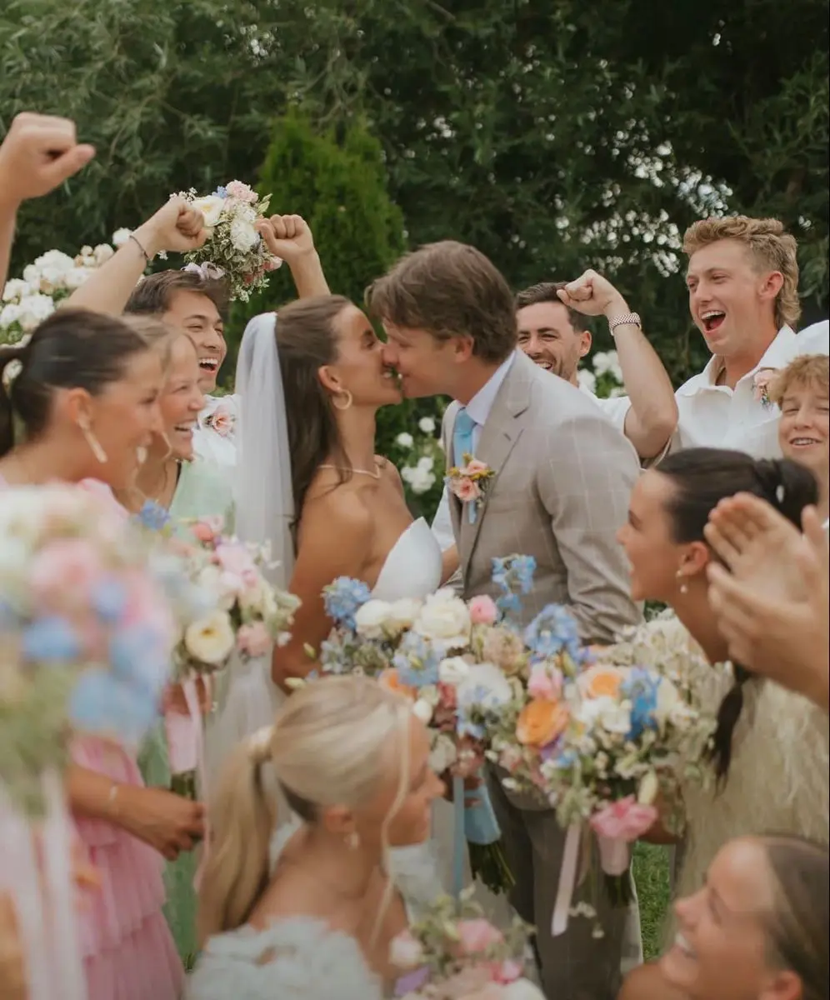
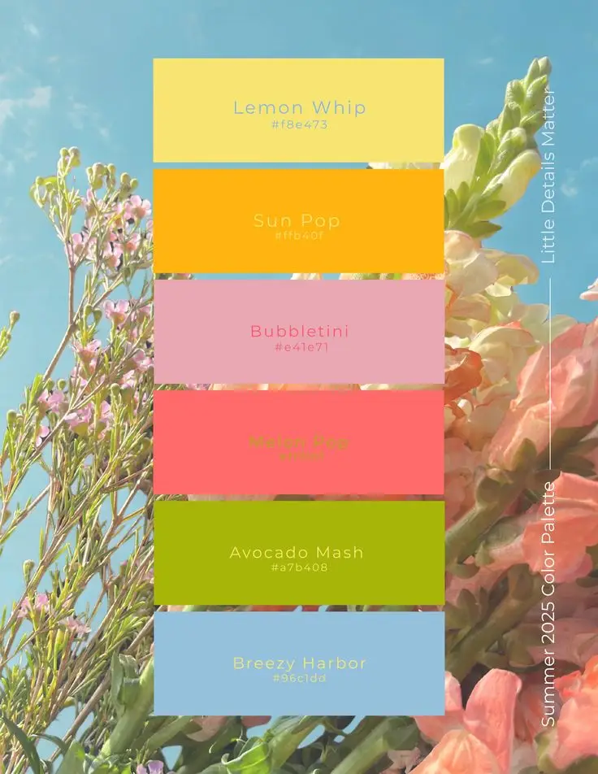
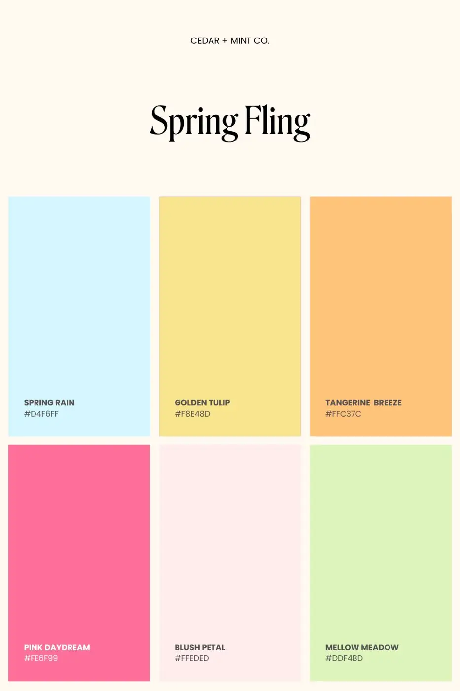
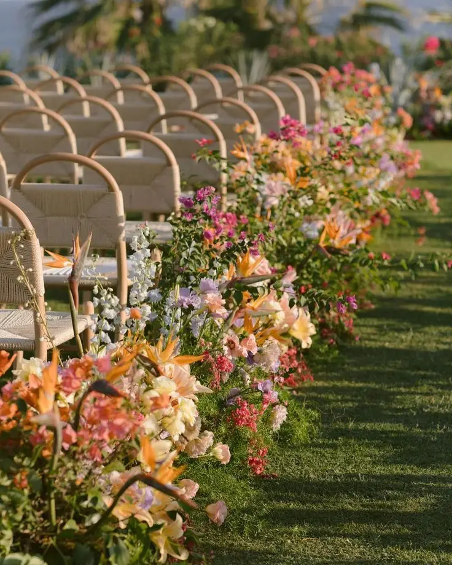
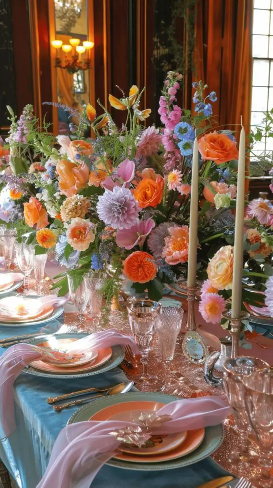
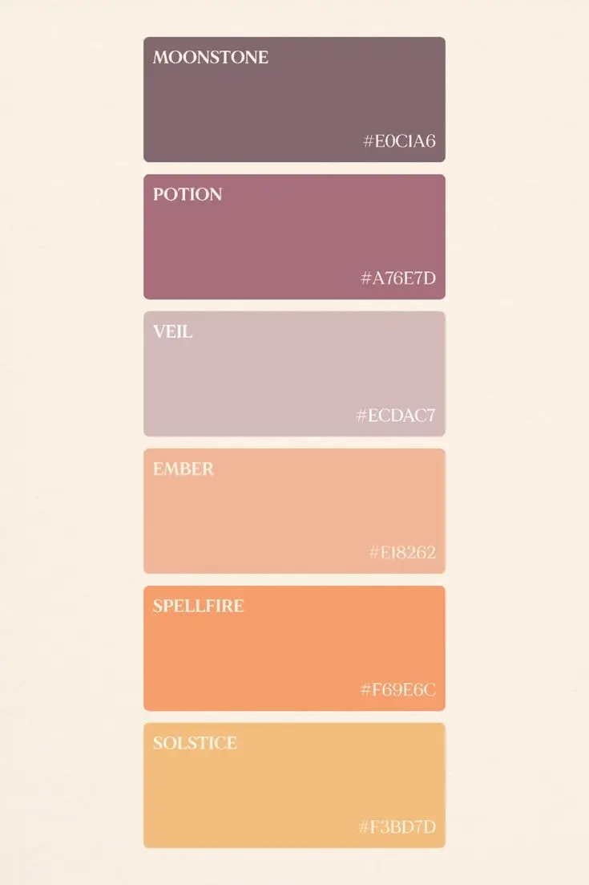
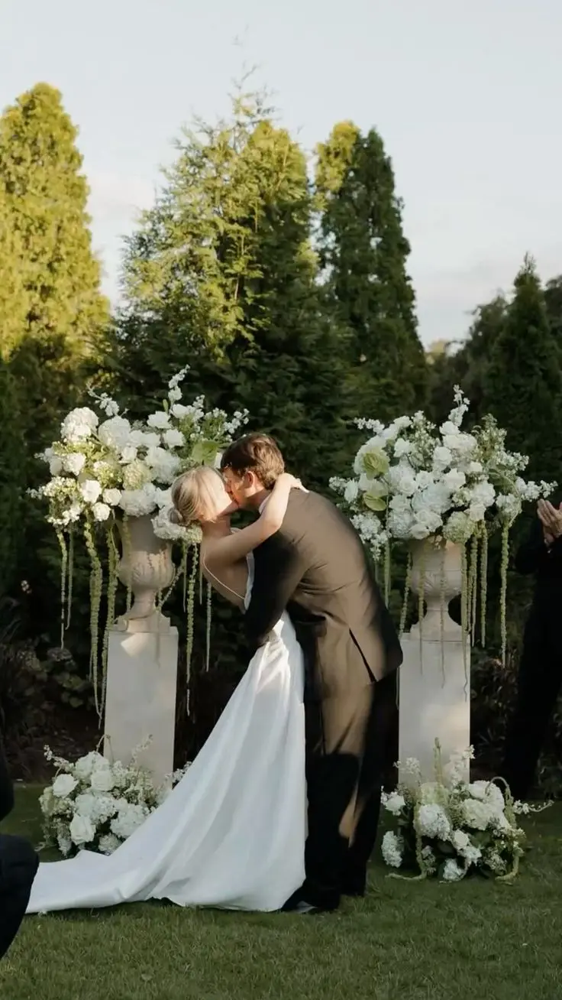
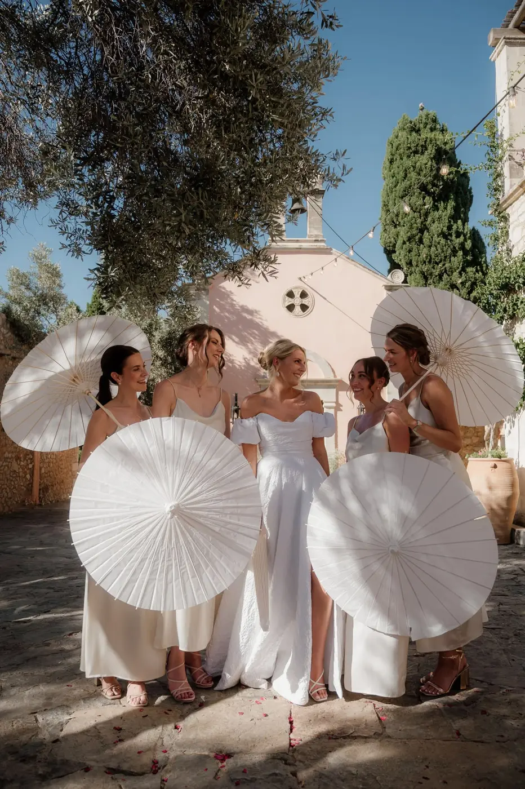
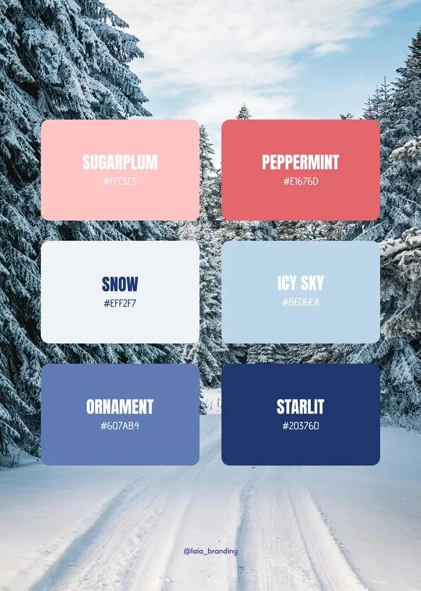

Les couleurs ne sont jamais choisies au hasard. Elles influencent l’émotion, l’énergie et la manière dont vos invités vivront, et se souviendront, de votre journée. Dans l’univers du mariage, la palette de couleurs est un véritable fil conducteur : elle structure l’ambiance, valorise le lieu de réception et crée une harmonie visuelle entre la décoration, la papeterie, les fleurs et les tenues.
En tant que wedding planner en Nouvelle-Aquitaine, j’accompagne les futurs mariés à Bordeaux et dans toute la région bordelaise dans la création de moodboards élégants et cohérents, pensés selon la saison, le style souhaité et l’identité du couple. Grâce à la psychologie des couleurs, il est possible de composer une atmosphère qui reflète parfaitement votre histoire tout en sublimant votre mariage.
Voici comment choisir votre palette idéale en fonction de la saison, de la symbolique des couleurs et de leur impact émotionnel.
Printemps : douceur, renouveau et romantisme
Le printemps est une saison particulièrement appréciée pour les mariages en Nouvelle-Aquitaine. La nature se réveille, la lumière devient plus douce et les paysages se parent de couleurs fraîches et délicates. Cette période symbolise naturellement le renouveau, la promesse et le commencement d’une nouvelle histoire à deux. Elle se prête parfaitement à une célébration romantique, élégante et lumineuse, notamment dans un domaine viticole ou un château autour de Bordeaux.
Palette idéale
- Rose poudré
- Vert sauge
- Lavande
- Ivoire
Ces teintes pastel composent une palette subtile et harmonieuse. Le rose poudré apporte une touche romantique et intemporelle, idéale pour les fleurs, les rubans ou la papeterie. Le vert sauge, très tendance en décoration de mariage, équilibre l’ensemble avec une note végétale et naturelle. La lavande, douce et légèrement poudrée, évoque les paysages du Sud-Ouest et sublime une décoration florale printanière. Enfin, l’ivoire permet d’apporter de la lumière et d’unifier l’ensemble avec élégance.
Impact émotionnel
Un mariage au printemps évoque la fraîcheur, la légèreté et la délicatesse. Les tons pastel créent une atmosphère apaisante et lumineuse, propice à une ambiance intime et chaleureuse. Cette palette convient particulièrement aux cérémonies en extérieur, aux réceptions champêtres ou aux mariages bohèmes chic dans la région bordelaise.
Les invités ressentent une impression de douceur et de sérénité, tandis que les photographies bénéficient d’une lumière naturelle qui sublime les couleurs claires et les matières fluides.
Symbolique des couleurs
Le choix des couleurs au printemps n’est pas uniquement esthétique, il est aussi chargé de sens :
- Rose poudré : symbole d’un amour tendre, sincère et délicat.
- Vert sauge : représente l’équilibre, l’harmonie et le lien à la nature.
- Lavande : associée à la sérénité, à la douceur et à la paix intérieure.
Associer ces nuances permet de créer une palette de mariage printanière à la fois élégante, naturelle et profondément romantique, en parfaite harmonie avec la saison et l’environnement.



Été : énergie, lumière et convivialité
L’été est la saison de la lumière intense, des longues soirées en extérieur et des célébrations chaleureuses. En Nouvelle-Aquitaine, il offre un cadre exceptionnel pour organiser un mariage dans un château autour de Bordeaux, un domaine viticole ou en pleine nature. La chaleur du soleil, les paysages dorés et l’atmosphère festive inspirent des palettes vibrantes, solaires et élégantes.
Un mariage estival se distingue par son dynamisme et sa générosité. Les couleurs choisies doivent refléter cette énergie tout en conservant une certaine sophistication. L’objectif est de créer une ambiance lumineuse, conviviale et mémorable, parfaitement adaptée à la saison.
Palette idéale
- Terracotta
- Corail
- Bordeaux profond
- Doré
La terracotta, très prisée en décoration de mariage, apporte une chaleur naturelle et une touche méditerranéenne. Le corail illumine l’ensemble avec fraîcheur et modernité, idéal pour les compositions florales ou la papeterie. Le bordeaux profond structure la palette et ajoute une dimension élégante et raffinée, particulièrement adaptée aux réceptions dans des lieux de caractère. Enfin, le doré sublime chaque détail : arts de la table, bougeoirs, signalétique ou éléments de scénographie.
Cette combinaison crée une palette de mariage estivale audacieuse mais équilibrée, parfaite pour une ambiance chic et solaire.
Impact émotionnel
Les couleurs chaudes stimulent naturellement la joie, l’enthousiasme et la convivialité. Elles favorisent une atmosphère festive, propice aux échanges, aux rires et aux moments partagés en extérieur.
Dans le cadre d’un mariage d’été en Gironde, ces teintes dialoguent harmonieusement avec la pierre blonde des châteaux bordelais et les vignobles environnants. Elles renforcent la sensation de chaleur humaine et d’intensité émotionnelle, tout en créant un décor spectaculaire pour les photos au coucher du soleil.
Symbolique des couleurs
Chaque teinte porte une signification forte :
- Terracotta : symbole d’authenticité, de naturel et de chaleur.
- Bordeaux profond : incarne la passion, la profondeur des sentiments et l’élégance intemporelle.
- Doré : évoque le raffinement, la réussite et la lumière.
Associées avec justesse, ces couleurs permettent de concevoir un mariage d’été lumineux et sophistiqué, à la fois vibrant et élégant, en parfaite harmonie avec l’énergie de la saison.



Automne : élégance et intensité
L’automne est une saison particulièrement raffinée pour célébrer un mariage en Nouvelle-Aquitaine. Les vignobles se parent de teintes chaudes, la lumière devient plus dorée et l’atmosphère gagne en profondeur. Cette période inspire des ambiances feutrées, sophistiquées et chaleureuses, idéales pour un mariage chic dans un château ou un domaine viticole de la région bordelaise.
Un mariage d’automne séduit par son caractère enveloppant. Les couleurs sont plus intenses, plus texturées, et permettent de créer une scénographie riche et élégante. Cette saison se prête parfaitement aux matières nobles comme le velours, le lin épais, le bois brut ou les éléments métalliques patinés.
Palette idéale
- Prune
- Cuivre
- Vert forêt
- Beige chaud
La prune apporte profondeur et intensité, parfaite pour structurer la décoration florale ou la papeterie. Le vert forêt renforce l’élégance naturelle et crée un contraste harmonieux avec les éléments végétaux. Le cuivre illumine subtilement l’ensemble grâce à ses reflets chaleureux, notamment sur les bougeoirs, les couverts ou les détails décoratifs. Enfin, le beige chaud équilibre la palette en apportant douceur et luminosité.
Cette combinaison forme une palette de mariage automnale à la fois sophistiquée et chaleureuse, idéale pour une réception intimiste.
Impact émotionnel
L’automne évoque la maturité, la profondeur des sentiments et l’authenticité. Ces teintes créent une ambiance enveloppante et intimiste, propice aux cérémonies élégantes et aux dîners aux chandelles.
Dans la région bordelaise, elles s’accordent naturellement avec la pierre blonde des bâtisses anciennes et les paysages viticoles aux couleurs changeantes. Le résultat est une atmosphère à la fois chic, chaleureuse et intensément romantique.
Symbolique des couleurs
Chaque nuance renforce le caractère de cette saison :
- Prune : symbole de mystère, de noblesse et de raffinement.
- Vert forêt : représente la stabilité, l’ancrage et la force.
- Cuivre : incarne la chaleur, la convivialité et la générosité.
Associer ces teintes permet de créer un mariage d’automne élégant et profond, parfaitement en harmonie avec la saison et l’environnement naturel de la Gironde.
Hiver : modernité et raffinement
L’hiver est une saison idéale pour un mariage sophistiqué et élégant en Nouvelle-Aquitaine. Les journées plus courtes et la lumière douce offrent un cadre intimiste, parfait pour créer une atmosphère chic et contemporaine. Les mariages d’hiver permettent d’oser des associations de couleurs plus contrastées et luxueuses, tout en valorisant les lieux de réception, qu’il s’agisse d’un château bordelais, d’une salle moderne ou d’un domaine viticole intimiste.
Cette période invite à privilégier des palettes sobres mais marquantes, qui transmettent à la fois modernité, raffinement et élégance intemporelle. Les matières utilisées peuvent accentuer cette sophistication : velours, satin, cristal et éléments métalliques se combinent harmonieusement pour un rendu élégant et lumineux.
Palette idéale
- Blanc pur
- Bleu nuit
- Argent
- Or
Le blanc pur symbolise la pureté et apporte de la lumière, essentielle pour contraster avec l’ambiance hivernale. Le bleu nuit ajoute de la profondeur et une touche de modernité, idéal pour structurer la décoration ou les accessoires. Les touches métalliques, argent et or, apportent prestige, élégance et raffinement, que ce soit sur la papeterie, la vaisselle, les bougies ou les éléments décoratifs.
Cette combinaison forme une palette hivernale chic et harmonieuse, parfaitement adaptée aux mariages en intérieur ou aux célébrations sous une lumière tamisée.
Impact émotionnel
Les couleurs hivernales créent une atmosphère sophistiquée et contemporaine. Elles transmettent un sentiment de confiance, de prestige et de sérénité, tout en offrant un cadre chaleureux pour les invités malgré le froid extérieur. Les contrastes entre le blanc lumineux et les tons profonds du bleu nuit renforcent l’élégance des photos et subliment chaque détail décoratif.
Symbolique des couleurs
- Blanc pur : pureté, simplicité et lumière.
- Bleu nuit : profondeur, confiance et modernité.
- Argent / Or : prestige, raffinement et sophistication.
En choisissant ces nuances, il est possible de créer un mariage d’hiver moderne et raffiné, où chaque détail contribue à une scénographie élégante, mémorable et parfaitement en harmonie avec la saison froide à Bordeaux et dans sa région.
Comment créer votre moodboard couleurs parfait
Créer un moodboard couleurs est une étape essentielle dans l’organisation et le design de votre mariage. Il s’agit d’un outil visuel qui permet de rassembler et d’harmoniser tous les éléments de votre décoration afin d’obtenir une ambiance cohérente et élégante. Grâce à lui, il est possible de visualiser l’équilibre entre la papeterie, les fleurs, l’art de la table, les tenues, la décoration et l’éclairage, avant même de finaliser vos choix.
Un moodboard bien conçu facilite la communication avec votre wedding planner, vos fleuristes, vos décorateurs et tous les prestataires impliqués. Il permet d’anticiper les associations de couleurs, d’éviter les dissonances et de garantir une atmosphère harmonieuse qui reflète votre identité et l’ambiance souhaitée pour votre grand jour.
Méthode professionnelle en 5 étapes
- Définir l’émotion dominante : commencez par identifier l’ambiance que vous souhaitez transmettre : romantique, festive, minimaliste ou chaleureuse. Cette émotion guidera toutes vos décisions chromatiques.
- Choisir une couleur principale : sélectionnez la teinte qui représentera le fil conducteur de votre mariage et apparaîtra dans les éléments majeurs de la décoration.
- Ajouter 2 à 3 couleurs complémentaires : ces nuances viendront enrichir votre palette, créer des contrastes subtils et renforcer l’harmonie visuelle.
- Intégrer une texture : associez vos couleurs à des matières spécifiques comme le lin, le velours, le bois ou le métal. Ces textures ajoutent de la profondeur et du caractère à votre décoration.
- Tester la cohérence en lumière naturelle : observez votre palette à différentes heures de la journée pour vous assurer que les couleurs restent harmonieuses selon la lumière, qu’elle soit douce ou intense.
En suivant cette méthode, vous pourrez concevoir un moodboard couleurs équilibré, élégant et fidèle à votre vision, garantissant que chaque détail de votre mariage contribue à une scénographie harmonieuse et mémorable.
L’impact des couleurs sur vos invités
Les couleurs jouent un rôle majeur dans la perception et l’expérience de vos invités. Elles influencent subtilement l’ambiance générale de votre mariage et participent à créer des émotions durables. Selon les teintes choisies, il est possible de stimuler la convivialité, l’intimité ou l’élégance de votre célébration.
- Tons chauds : rouges, corail, terracotta ou dorés stimulent l’énergie et favorisent une atmosphère festive et dynamique. Elles sont idéales pour les mariages d’été ou les célébrations en extérieur.
- Tons froids : bleus, verts ou violets apportent élégance et sérénité, créant un cadre plus apaisant et sophistiqué, parfait pour les mariages hivernaux ou en intérieur.
- Tons neutres : ivoire, beige, blanc ou gris clair transmettent un raffinement intemporel, convenant à tout type de lieu et de saison.
Lors de l’organisation de mes mariages en Nouvelle-Aquitaine, je prends soin d’adapter chaque palette de couleurs aux spécificités locales :
- La lumière naturelle selon la saison et l’orientation du lieu, qui influence la perception des teintes.
- Le lieu de réception, qu’il s’agisse d’un château historique, d’un domaine viticole, d’une plage ou d’un espace contemporain.
- La saison bordelaise, afin que les couleurs choisies soient en harmonie avec le paysage environnant et la météo locale.
Ainsi, la palette de couleurs ne se limite pas à un choix esthétique : elle devient un outil stratégique pour créer l’ambiance idéale, émouvoir vos invités et sublimer chaque instant de votre mariage.

Les couleurs neutres : élégance et sobriété
Les couleurs neutres sont devenues un incontournable dans la décoration de mariage. Elles apportent raffinement, harmonie et équilibre à votre palette, tout en servant de base pour mettre en valeur d’autres teintes plus audacieuses. Ces nuances offrent une toile de fond idéale pour sublimer les fleurs, la papeterie, l’art de la table et les textures choisies.
Parmi les couleurs neutres les plus utilisées :
- Blanc et ivoire : apportent luminosité et pureté, parfaits pour un mariage classique ou minimaliste.
- Beige et sable : offrent chaleur et douceur, créant une atmosphère intime et naturelle.
- Gris clair et pierre : ajoutent modernité et sophistication, idéaux pour des mariages contemporains ou urbains.
Les neutres sont extrêmement polyvalents. Ils peuvent être combinés avec des teintes pastel pour un rendu romantique, avec des tons chauds pour une ambiance conviviale, ou avec des couleurs profondes pour créer un contraste élégant. Dans tous les cas, ils apportent cohérence et équilibre à votre décoration, tout en permettant aux éléments décoratifs et floraux de ressortir pleinement.
Associations de couleurs tendances
Pour un mariage moderne et élégant, certaines associations de couleurs sont particulièrement prisées ces dernières années en Nouvelle-Aquitaine :
- Terracotta + Vert sauge + Ivoire : idéale pour un style bohème chic ou champêtre, mêlant chaleur et naturel.
- Rose poudré + Lavande + Doré : parfaite pour un mariage romantique et lumineux au printemps.
- Bordeaux + Cuivre + Beige chaud : très adaptée à l’automne, elle combine profondeur, élégance et chaleur.
- Bleu nuit + Argent + Blanc pur : un choix sophistiqué pour un mariage d’hiver, élégant et moderne.
- Corail + Jaune pâle + Vert feuillage : tendance pour l’été, cette palette apporte énergie, lumière et convivialité.
Ces associations permettent de créer une scénographie harmonieuse et actuelle, tout en s’adaptant à la saison, au lieu et à l’ambiance souhaitée. Elles offrent également une grande flexibilité pour intégrer des textures et des matières variées, donnant ainsi à chaque mariage un style unique et mémorable.
Pourquoi se faire accompagner pour choisir ses couleurs
Choisir la palette de couleurs de votre mariage peut sembler simple, mais il s’agit en réalité d’une étape stratégique qui influence l’ensemble de votre décoration et l’ambiance de la journée. Une palette mal équilibrée peut rapidement créer des déséquilibres visuels et diminuer l’impact global de votre scénographie.
Une mauvaise association de couleurs peut alourdir la décoration, générer des contrastes incohérents et réduire l’effet visuel des photos, rendant l’ensemble moins harmonieux. Les détails qui devraient sublimer votre mariage risquent alors de passer inaperçus ou de créer une impression de désordre.
Se faire accompagner par un wedding planner à Bordeaux et dans toute la région bordelaise permet de bénéficier d’un regard professionnel et expérimenté. Grâce à la conception de moodboards personnalisés, il est possible de garantir une harmonie parfaite entre l’émotion, la saison et l’identité des mariés. Chaque élément de décoration, des fleurs aux accessoires en passant par la papeterie et l’éclairage, s’intègre dans une palette cohérente, créant une atmosphère élégante et mémorable.
Un accompagnement expert transforme le choix des couleurs en un véritable atout : il structure la décoration, sublime vos photos et contribue à faire de votre mariage un événement harmonieux, unique et parfaitement réfléchi.


En bref...
Le choix des couleurs pour votre mariage ne se limite pas à une question esthétique : il influence directement l’ambiance, les émotions de vos invités et l’harmonie de chaque détail. Que vous optiez pour des tons doux au printemps, des couleurs chaudes en été, des nuances profondes à l’automne ou des palettes sophistiquées en hiver, chaque teinte raconte une histoire et participe à créer un univers unique pour votre grand jour.
Se faire accompagner par un wedding planner à Bordeaux et en Nouvelle-Aquitaine vous permet de concevoir un moodboard couleurs cohérent et personnalisé, adapté à votre style, à la saison et au lieu de réception. Cette démarche garantit une scénographie harmonieuse, élégante et mémorable, où chaque élément, fleurs, décoration, papeterie ou éclairage, contribue à sublimer votre mariage et à laisser des souvenirs inoubliables.
En définitive, une palette bien pensée transforme votre célébration en une expérience visuelle et émotionnelle complète, où l’élégance et l’harmonie sont présentes à chaque instant.